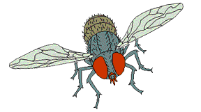

Aprendamos a compostear

Instrucciones
KID la lombriz roja californiana te ayudará a tener tu lombricomposta en buen estado.
La composta tiene que manetener su nivel de pH en 7 si no perderás!!.
El cascarón te ayudará a mantener ese nivel de pH.
Los vegetales le darán alimento a la lombriz, debe de ser mayor a 30, si no perderás.
La mosca  bajará el nivel del pH en tu composta.
El agua sólo deberás seleccionarla si tu humedad es menor a 60%.